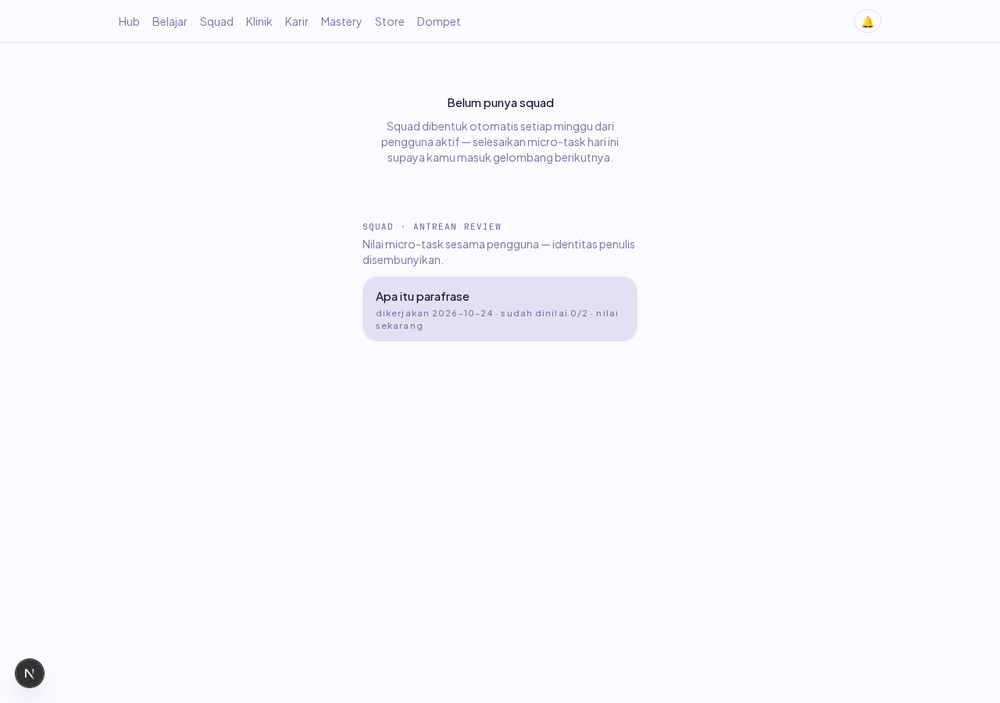
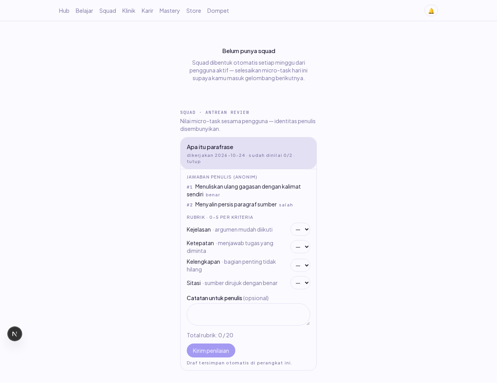
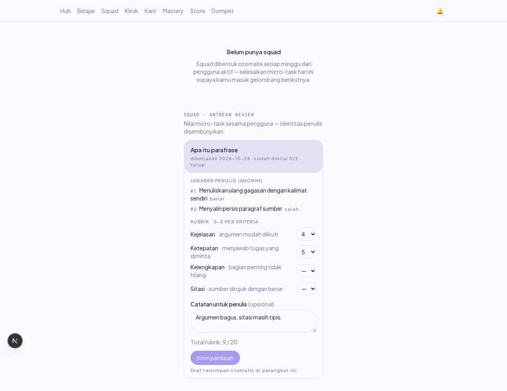
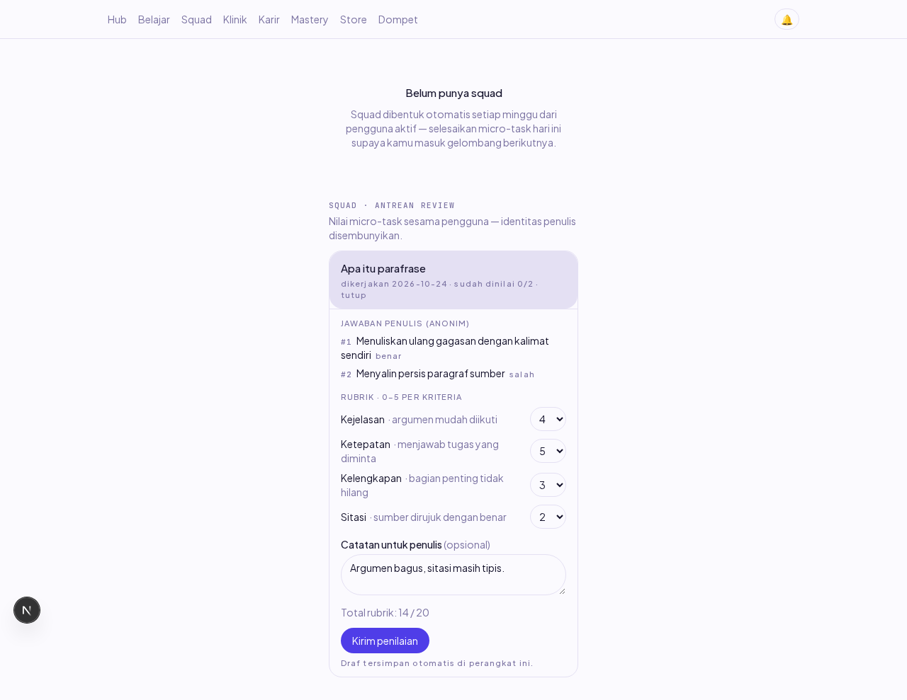
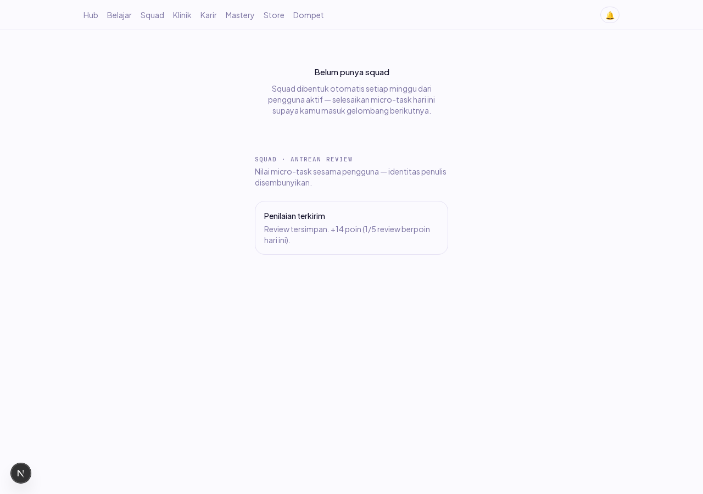
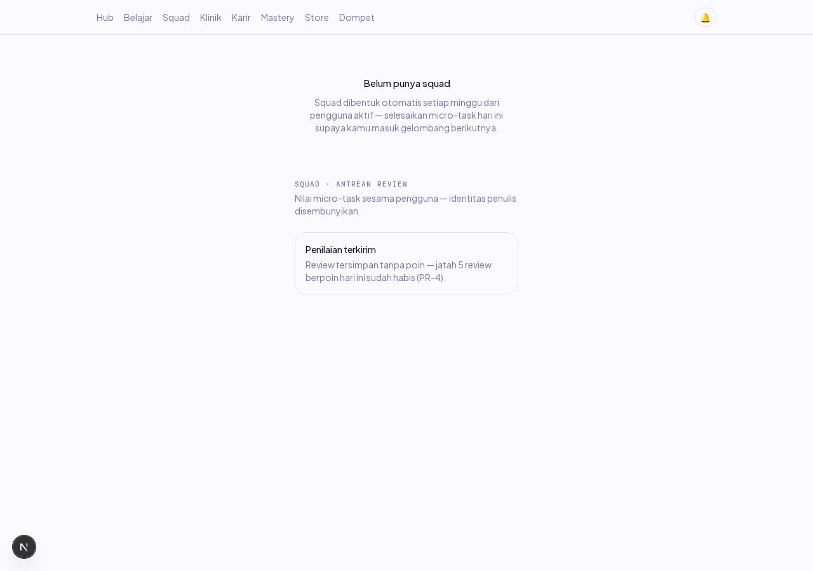
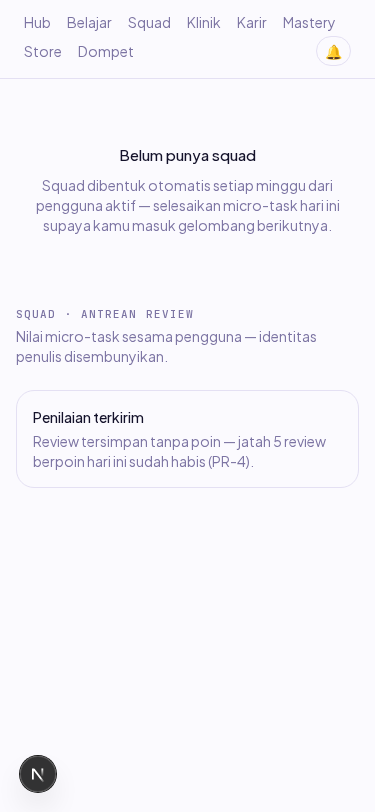

Laporan verifikasi item PR-03 (Dev B, W7, PRD §7 E11). Layar antrean review peer di halaman /squad: daftar micro-task yang menunggu penilaian, form rubrik 4 kriteria, draf yang bertahan tutup halaman, dan pesan hasil jelas soal poin. Dikerjakan 24–25 Okt 2026.
Sebelum: endpoint GET /reviews/queue dan POST /reviews/:id (PR-02) sudah berdiri tapi tidak ada satu pun layar yang memakainya — pengguna tidak bisa menilai sesama anggota, dan dua review per attempt (PR-1) tidak akan pernah terpenuhi dari UI. Sesudah: halaman /squad memuat seksi "Antrean review" berisi attempt yang menunggu penilaian (judul lesson, tanggal, badge sudah dinilai 0/2), dan membuka satu item menampilkan jawaban penulis secara anonim plus form rubrik.
Dua acceptance criteria item terbukti: (1) rubrik menampilkan kriteria yang sama dengan yang dipakai mentor — daftar kriteria diambil dari konstanta tunggal yang dijaga drift-guard membaca docs/PRD.md PR-10 langsung (kejelasan, ketepatan, kelengkapan, sitasi; 0..5 per kriteria), jadi menyimpang dari PRD memerahkan test, bukan bergantung ketelitian; (2) draf penilaian tersimpan lokal kalau halaman tertutup — autosave tiap perubahan ke localStorage, nilai + komentar + kunci idempoten kembali utuh setelah reload, dan kunci itu TIDAK lahir ulang sehingga retry tetap satu review.
Keputusan desain: penilaian tetap dihitung server (aturan keras 9) — rubrikLengkap di sisi web hanya men-disable tombol kirim, tidak pernah memutuskan poin; identitas penulis tidak ada di UI karena memang tidak dikirim server (PR-2, bukan disembunyikan di sisi tampilan); kunci draf menjadi per-pengguna setelah audit (lihat seksi 5).
Dua keadaan uji yang perlu diketahui pembaca: (1) Attempt bukti dan akun uji disemai lewat psql — antrean butuh attempt milik pengguna lain yang sudah selesai, dan membuatnya lewat UI berarti menyelesaikan lesson sungguhan sebagai author; bentuk barisnya persis keluaran POST /attempts (termasuk card_results jsonb). (2) Fase cap PR-4 butuh 5 review berpoin di hari yang sama oleh satu reviewer — empat di antaranya disemai langsung lewat psql (dua reviewer per attempt, sesuai PR-1) supaya submit ke-6 bisa dibuktikan tersimpan tanpa poin. Yang diuji browser adalah jalur sungguhan: antrean, draf, submit, dan pesan hasil semuanya lewat API.
| # | Skenario | Harapan | Hasil | Cara verifikasi |
|---|---|---|---|---|
| 1 | Login reviewer | sesi terbentuk, mendarat di /hub | LULUS | Playwright |
| 2a | Antrean tampil | tepat 1 item menunggu | LULUS (jumlah=1) | Playwright + Screenshot 01 |
| 2b | Info item | judul lesson + tanggal + badge "sudah dinilai 0/2" | LULUS | Playwright |
| 3 | PR-2 anonimitas | nama & email penulis TIDAK tampil di mana pun | LULUS | Playwright (teks seksi) |
| 4a | Aksesibilitas toggle | aria-expanded=true saat terbuka | LULUS | Playwright (getAttribute) |
| 4b | AC-1: kriteria rubrik = PR-10 | Kejelasan, Ketepatan, Kelengkapan, Sitasi — tanpa kriteria lain | LULUS | Playwright + unit drift-guard baca PRD |
| 4c | Total awal | "Total rubrik: 0 / 20" | LULUS | Playwright |
| 4d | Gerbang kirim | tombol kirim disabled saat draf kosong | LULUS | Playwright |
| 5 | Jawaban penulis tampil | teks jawaban + label benar/salah per kartu | LULUS | Playwright + Screenshot 02 |
| 6a | Dua kriteria terisi | tombol MASIH disabled (empat wajib) | LULUS | Playwright |
| 6b | Total live | 4+5 = "9 / 20" tanpa kirim apa pun | LULUS | Playwright |
| 7a | AC-2: draf bertahan reload | skor 4/5 + komentar kembali utuh; dua kriteria lain tetap kosong | LULUS | Playwright + Screenshot 03 |
| 7b | Kunci idempoten melewati reload | kunci SAMA sebelum/sesudah (uuid 36 kar.) — retry = 1 review | LULUS | Playwright (baca localStorage) |
| 7c | Gerbang setelah reload | tombol masih disabled (draf belum lengkap) | LULUS | Playwright |
| 8a | Empat kriteria terisi | tombol kirim ENABLED | LULUS | Playwright + Screenshot 04 |
| 8b | Total akhir | 4+5+3+2 = "14 / 20" | LULUS | Playwright |
| 9 | Submit berpoin | "+14 poin (1/5 review berpoin hari ini)" | LULUS | Playwright + Screenshot 05 |
| 10 | PR-3 anti review ganda | attempt yang barusan dinilai HILANG dari antrean saya | LULUS | Playwright |
| 10b | PR-1 dua reviewer | DB: attempt kini punya 1 dari 2 review (menunggu reviewer ke-2) | LULUS (reviews=1) | psql |
| 11 | Draf dibuang setelah sukses | localStorage kunci draf = null | LULUS | Playwright (evaluate) |
| 12 | Filter antrean | bait 2-review & attempt ter-review tidak tampil; hanya attempt baru 0/2 | LULUS (jumlah=1) | Playwright |
| 13 | AC-PR-3: cap PR-4 | submit ke-6 hari itu: "tersimpan tanpa poin — jatah 5 habis" | LULUS | Playwright + Screenshot 06 |
| 14 | Bukti DB cap | tepat 5 review berpoin hari itu; review ke-6 wp=0 | LULUS (berpoin=5, wp6=0) | psql |
| 15 | 375px mobile | tanpa scroll horizontal (scrollWidth=375) | LULUS | Playwright + Screenshot 07 |
| 16 | Console | nol error sepanjang alur | LULUS | listener Playwright |
| 17 | Network | nol request 4xx/5xx | LULUS | listener Playwright |
| Varian | Cakupan | Status |
|---|---|---|
| Kriteria rubrik (4) | keempat kriteria diisi bertahap (2 → 4); total live diuji di 0, 9, 14; nama kriteria dijaga drift-guard terhadap PRD PR-10 | 4/4 |
| Gerbang tombol kirim | kosong, separuh (2 kriteria), lengkap — plus tetap disabled setelah reload draf separuh | 3/3 |
| Hasil submit (2) | berpoin (+14, 1/5) dan capped (tanpa poin, jatah habis) | 2/2 |
| Draf (3 keadaan) | tersimpan (reload), terhapus (sukses), per-pengguna (isolasi antar akun — unit test) | 3/3 |
| Antrean (3 filter) | belum direview (tampil), sudah 2 review (tidak), sudah dinilai saya (tidak) | 3/3 |
| Viewport | desktop 1280px + mobile 375px | 2/2 |
Audit dijalankan atas seluruh diff PR-03 sebelum commit. Nol temuan Critical/High. Wilayah yang diperiksa dan bersih: XSS (nol dangerouslySetInnerHTML, semua interpolasi lewat JSX), anonimitas PR-2 (bentuk data memang tanpa field author), kunci jawaban (card_results tanpa why), localStorage diperlakukan tak terpercaya (draf rusak/dimanipulasi dibuang), validasi skor sepenuhnya di server, rahasia (nol), konfigurasi (tak berubah), supply chain (nol dependensi baru).
| Temuan | Severity | Tindakan |
|---|---|---|
Batas panjang comment (500) hanya di client — server menerima panjang berapa pun | Low | Isu GitHub untuk Dev A: perbaikan menuntut kode error baru (terdaftar PRD §10.2 dulu) + penjaga error-codes.spec.ts, sebidang dengan service Dev A — pola preseden isu #233. Tidak ditambal buru-buru di PR ini supaya diff tetap satu bidang. Isu #257. |
| Kunci draf localStorage tidak per pengguna — dua akun di satu profil browser saling mewarisi draf | Low | Dipatch di PR ini: kunci jadi strive:draf-review:v1:<userId>:<attemptId>; identitas dari GET /me; gagal-tertutup (tanpa id, draf tidak dimuat/di-disimpan, kirim tetap jalan); 3 unit test isolasi baru. |
| Kartu true/false tampil "(tidak dijawab)" padahal dijawab (jawaban boolean, bukan string) | catatan | Dipatch di PR ini: boolean dipakaikan label Ya/Tidak supaya tidak kembar dengan label benar/salah correctness. |

01 — /squad: seksi Antrean review, satu item menunggu (badge "sudah dinilai 0/2"), tanpa identitas penulis.

02 — Form terbuka: jawaban penulis (anonim) + rubrik 4 kriteria PR-10, total 0/20, tombol kirim disabled.

03 — Setelah reload halaman: skor 4 + 5 dan komentar kembali utuh (AC draf), tombol masih disabled.

04 — Empat kriteria terisi: total live 14/20, tombol kirim enabled.

05 — Submit sukses: "+14 poin (1/5 review berpoin hari ini)"; attempt hilang dari antrean (anti review ganda).

06 — Submit ke-6 di hari yang sama: "tersimpan tanpa poin — jatah 5 habis" (cap PR-4, AC-PR-3).

07 — 375px tanpa scroll horizontal.
| Pemicu | Gejala | Akar | Penjaga / perbaikan |
|---|---|---|---|
Menyisipkan const reviewerId = psql(…) di atas deklarasi psql pada script verifikasi | crash ReferenceError: Cannot access 'psql' before initialization sebelum browser dibuka | TDZ const — baris baru memakai fungsi yang dideklarasi di bawahnya | urutan deklarasi diperbaiki; bukan bug kode produk, dicatat supaya pola sisip-di-atas tidak diulang |
| Patch draf per-pengguna diterapkan saat web dev :3005 masih berdiri | 7a hijau tapi 7b merah: draf LAMA (kunci tanpa userId) masih terbaca — kode baru tidak pernah dihidangkan | file watching tidak bekerja di mount Windows /mnt/d (drvfs tanpa inotify) — Next dev menghidangkan compile basi tanpa error | restart web sebelum verifikasi + pre-flight probe yang membaca bentuk kunci localStorage langsung; jangan percaya "server masih jalan" sebagai "kode terbaru" di WSL |
| Rerun verifikasi tanpa membersihkan data run sebelumnya | check 9 melaporkan "5/5" (harusnya 1/5) lalu seed bait menabrak lesson_attempts_user_id_lesson_id_attempt_date_idx | 4 review bait run pagi itu masih tercatat HARI INI (cap menghitung created_at hari lokal) dan attempt bait tanggal sama sudah ada | reset presisi sebelum tiap run: hapus attempt author hari ini + review reviewer di attempt utama; jangan hapus review reviewer di attempt lain (bait 24 Okt berguna sebagai filter antrean) |
| Kartu true/false dirender sebagai teks jawaban | tampil "(tidak dijawab)" padahal penulis menjawab | answer kartu true/false adalah BOOLEAN (swipe kiri/kanan di lesson-player), bukan string — ?? fallback menelan false… tidak: false string-kosong bukan, ia lolos sebagai nilai falsy yang dibaca "tidak ada" | bacaKartu menerima string | boolean | null; boolean dipakaikan label Ya/Tidak (temuan audit) |
Run gerbang pertama merah di langkah kelima: audit-deps menemukan 3 advisory high BARU tanpa satu commit pun (zod GHSA-mrhx-c7xc-m3w5, body-parser GHSA-27r3-jxmh-p828, multer GHSA-q7qp-rjg7-q26m) — kelas kejadian yang sama dengan braces (#199/#201) dan brace-expansion (#185), kelimanya kalender advisory, bukan kode siapa pun. Ditangani di sesi yang sama:
pnpm.overrides root (keduanya transitive @nestjs/platform-express, tambal sesama major — pola preseden brace-expansion). pnpm install + lockfile + audit bersih.security/pengecualian.json dengan alasan jangkauan yang diverifikasi (zod nol di server — apps/api tak punya dependensi zod dan impor contracts produksinya import type semata; zod hanya jalan di browser) dan tanggal tinjau ulang 2026-11-08, lebih pendek dari pengecualian lain karena ini utang, bukan keputusan.| Perintah | Hasil |
|---|---|
pnpm --filter @strive/web test | 29/29 review-queue (termasuk drift-guard PRD PR-10, isolasi draf per pengguna, draf rusak dibuang); workspace web 154/154 |
| Script browser (Playwright, stack e2e) | 26/26 PASS, gagal 0 — run bukti DIMULAI setelah perubahan kode terakhir |
pnpm lint && pnpm typecheck && pnpm test && pnpm build && node scripts/audit-deps.mjs | LULUS — GATES_EXIT=0 (25 Okt, run dimulai setelah perubahan terakhir). audit-deps: 12 tinggi/kritis · 12 dikecualikan · 0 baru · 0 basi. |